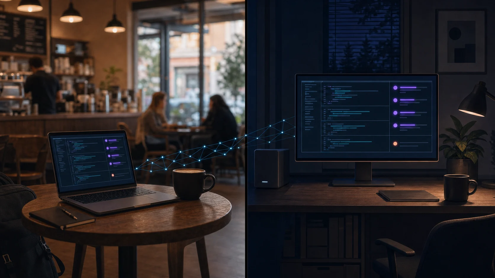

AI coding sessions belong on the machine that can stay on.
Run romty on a powerful workstation at home or at the office. Connect through Tailscale and SSH, start an agent, disconnect, and return from anywhere to the same terminal session with its output intact.
brew install opspresso/tap/romty
Source on GitHub

One session. More than one place.
Your laptop is only the way in. The agent, shell, working tree, and romty daemon stay together on the remote machine, so closing SSH does not interrupt the work.
Tailscale is optional transport, not a romty dependency. romty stays local to the remote host and listens only on a Unix socket owned by your user.
╭─ Codex ─────────────────────────────────────────────────────╮ │ Update the homepage demo to match the current romty UI. │ ╰──────────────────────────────────────────────────────────────╯ • Explored └ Read pages/index.html, internal/ui/ui.go • Edited pages/index.html +64 -29 └ Synced workspace rows, tabs, agent phases, and shortcuts • Ran go test ./... └ ok github.com/opspresso/romty/internal/ui ◑ Working rebuilding the live preview ›
Long-running shells, several projects at once, and output you want to scroll back through and copy — without giving up the things your terminal already does well.
A detached daemon owns every shell PTY. Closing romty, or the terminal hosting it, leaves the processes running; reopening reattaches and replays what you missed.
Point romty at a root directory and it lists the root and its direct children as workspaces. Both can host terminal tabs, each starting in its own directory.
10,000 lines per terminal, opened full width so a plain click-drag copies terminal output and nothing else — type or paste to return directly to the live terminal.
F1 through F7 drive the whole interface, while F8 and F9 protect destructive workspace actions. Physical key reporting keeps them working in any keyboard input mode, so a Korean or Japanese IME never swallows a shortcut mid-session.
The wheel enters terminal history without a mode switch, while typing returns to the live shell without dropping the first key. Applications that request the mouse can still have it through passthrough.
Colors follow the terminal's own light or dark background, code diffs are syntax highlighted, and the layout reflows with the window. One binary, no configuration required to start.
macOS or Linux. Building from source needs Go 1.25 or later.
$ brew install opspresso/tap/romty
$ go install github.com/opspresso/romty/cmd/romty@latest
$ git clone https://github.com/opspresso/romty $ cd romty $ go build -o build/romty ./cmd/romty
Run romty and the daemon starts on its own. Press F2, walk to a
project directory with → and ←, and press Enter to add it.
To shut every session down from outside the TUI, run romty stop.
F1 through F7 work from either pane and with regular modals open. Alternatives shown beside them are contextual, and file view assigns its own actions to F5 and F6. Destructive actions ask first.
Everything else goes to the shell, including Ctrl+←, pasted text,
and the function keys a full-screen program binds above F7 — htop keeps its
F9. See the interface
guide for scope and mode details.
romty TUI
├─ workspace tree
└─ terminal tabs and VT renderer
│
Unix socket
│
romty daemon
├─ state store
└─ PTY sessions
└─ shell process
The TUI talks to a detached daemon over a Unix socket owned by your user. The daemon holds the PTYs and up to 8 MiB of output per session, so the client is free to come and go.
Reattaching replays that recording through the client's VT emulator, preceded by the terminal modes the shell had set — bracketed paste among them, so a multi-line paste still arrives as one paste after hours of output.
New shells inherit the environment and $SHELL of the romty that asked
for them, not the daemon's, which may have started days earlier.